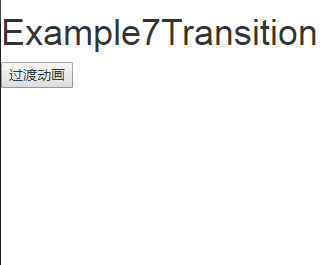

本示例展示vue自带的过渡效果的使用方法。
本示例中对第三方动画类库animate的使用仅为class "animated bounceIn" 和 "animated bounceOut"。
效果展示：

基于vue-cli的示例：
main.js
import Vue from 'vue'
import App from './App.vue'
//引入第三方animate类库
import animate from 'animate.css'
Vue.use(animate);
new Vue({
render: h => h(App)
}).$mount('#app')Example.vue
<template>
<div>
<input type="button" value="过渡动画" @click="flag=!flag">
<transition>
<div v-if="flag"> 过度动画演示</div>
</transition>
<!-- 自定义 -->
<transition name="div">
<div v-if="flag"> 自定义前缀过度动画演示</div>
</transition>
<!-- 使用第三方动画类库animate 先安装 npm install animate.css --save 再引入 -->
<!-- 分别设置入场出场时间 :duration="{enter:100,leave:300}" -->
<transition enter-active-class="animated bounceIn" leave-active-class="animated bounceOut" :duration="400">
<div v-if="flag"> 自定义前缀过度动画演示</div>
</transition>
<br><br><br>
</div>
</template><script>
//关于 Vue 实例中的 this: 在Vue实例中，要获取 data 中的数据 或者 methods 中的方法，必须使用 this. 访问，这里的 this 表示 Vue 实例对象
export default {
data(){//注意：使用 vue cli 后，这里是属于组件 data 必须这么写，和实例 data 不一样，实例可以是对象
return{flag:false}
}
};
</script><style>
.v-enter,/*进场动画前，元素起始状态*/
.v-leave-to{/*2.1.8版及以上 离场动画后，离开后的终止状态*/
opacity:0;
}
/*.v-enter-to,/*2.1.8版及以上 进场动画后，过渡的结束状态。在元素被插入之后下一帧生效 (与此同时 v-enter 被移除)，在过渡/动画完成之后移除
.v-leave{/*离场动画前,定义离开过渡的开始状态。在离开过渡被触发时立刻生效，下一帧被移除
background-color:white;
}*/
.v-enter-active,/*进场动画*/
.v-leave-active{/*离场动画*/
transition: all 1s ease
}
/* 自定义前缀替代v-，可以定义多种过渡动画 */
.div-enter,/*进场动画前，元素起始状态*/
.div-leave-to{/*2.1.8版及以上 离场动画后，离开后的终止状态*/
opacity:0;
}
.div-enter-active,/*进场动画*/
.div-leave-active{/*离场动画*/
transition: all 1s ease
}
</style>